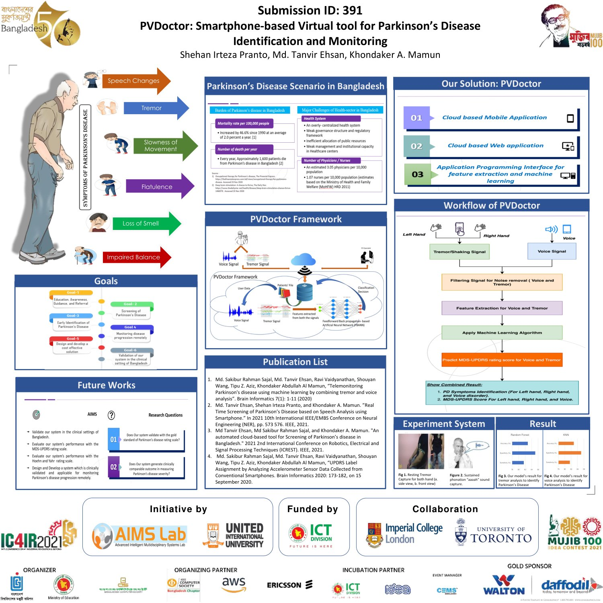
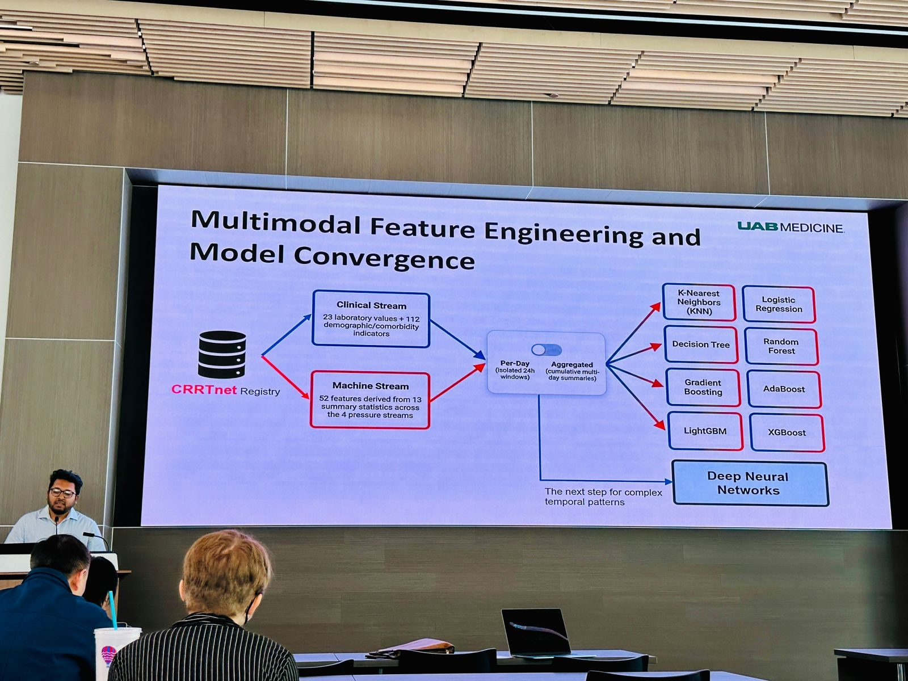
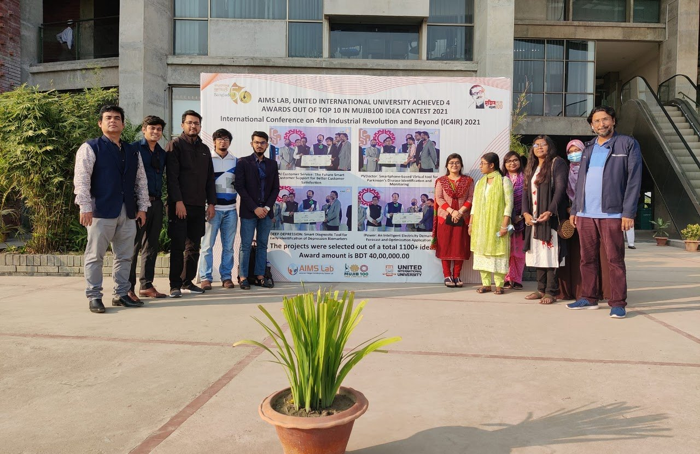
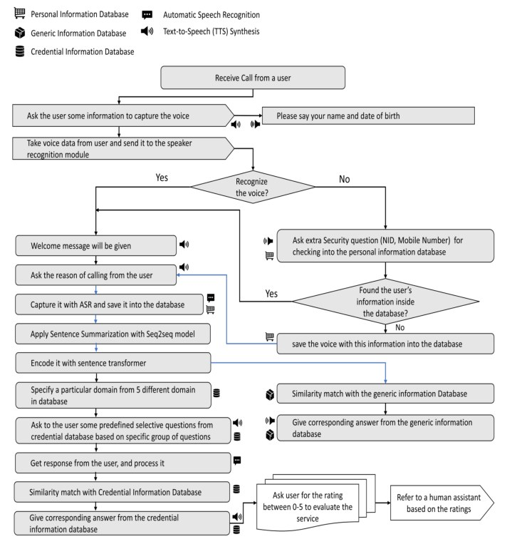
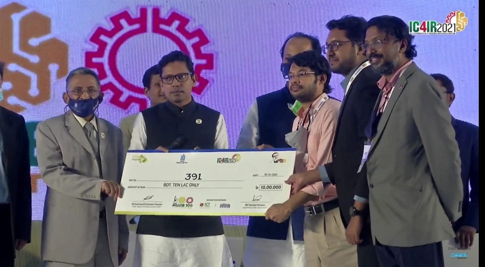
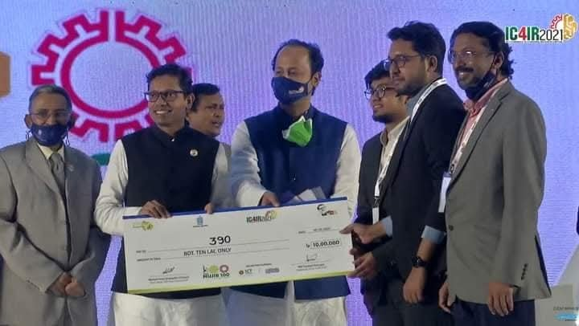
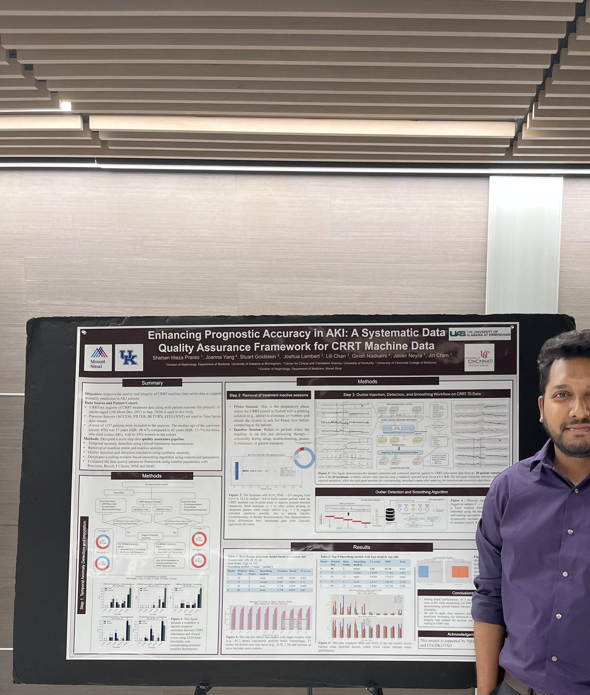
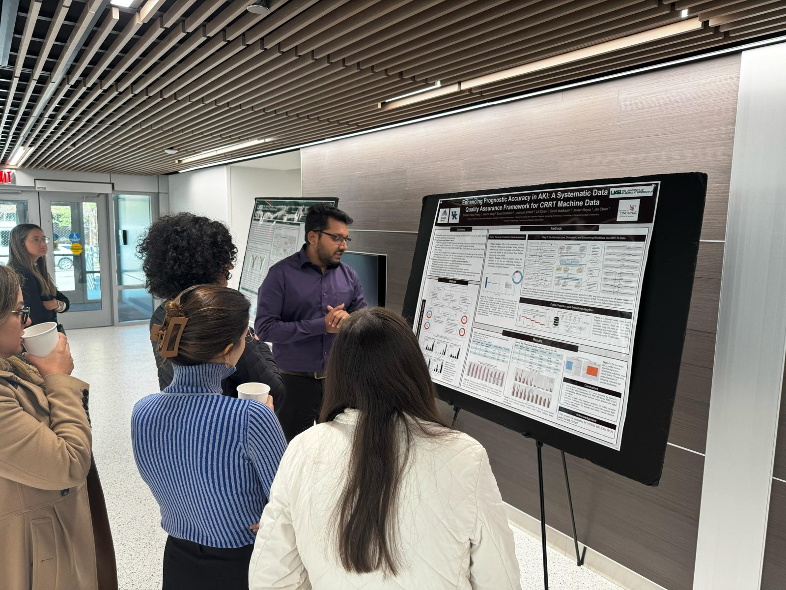

PVDoctor: smartphone-based Parkinson's disease screening
Voice and tremor analysis with a cloud back end for low-cost screening and MDS-UPDRS severity estimation. IC4IR 2021 submission 391.
Honours, fellowships and the talks behind them.
UAB Annual Translational and Transformative Informatics Symposium, Birmingham, AL. Flash talk and poster: Do CRRT Machine Signals Add Prognostic Value? A Multimodal Machine Learning Approach to ICU Mortality Prediction (with Javier A. Neyra and Jin Chen).
Receiving the 2nd Place Poster Award at the closing session.

Two AIMS Lab projects I engineered placed in the top 10 of 1,051 teams in the national Mujib100 Idea Contest, each receiving a 1,000,000 BDT award from the ICT Division, Government of Bangladesh:


Voice and tremor analysis with a cloud back end for low-cost screening and MDS-UPDRS severity estimation. IC4IR 2021 submission 391.

Bangla voice assistant with speaker authentication, ASR, dialogue matching and TTS for e-commerce support.


UAB Annual Translational and Transformative Informatics Symposium.
UAB Graduate School.
Smartphone-based Parkinson's disease screening (PVDoctor).
AI Customer Service: smart call-center support (AIMS TALK).

